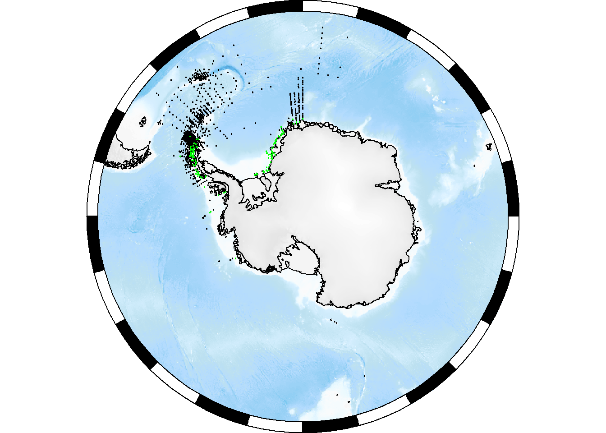
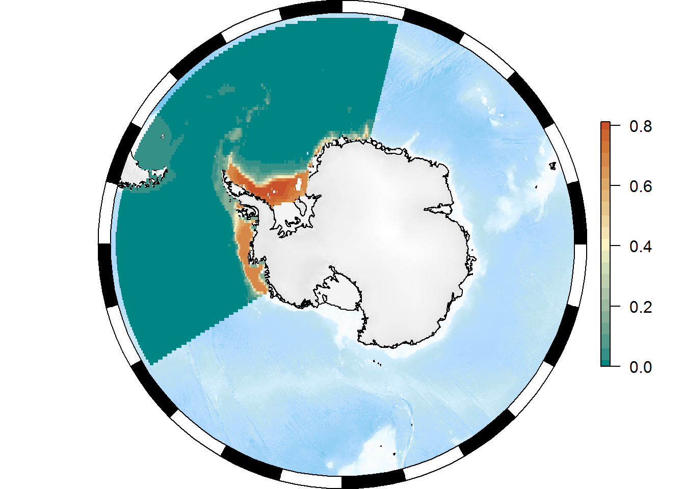

2 SCAR-EGABI Tools for Southern Ocean Spatial Analysis and Modelling
2.1 Preparation
Make sure we have the packages we need from CRAN:
pkgs <- c("remotes", "worrms", "dplyr", "robis", "ncdf4", "raster")
pkgs <- setdiff(pkgs, installed.packages()[, 1])
if (length(pkgs) > 0) install.packages(pkgs)And from GitHub:
library(remotes)
pkgs <- c("AustralianAntarcticDivision/SOmap", "AustralianAntarcticDivision/blueant")
pkgs <- pkgs[!basename(pkgs) %in% installed.packages()[, 1]]
for (pkg in pkgs) remotes::install_github(pkg)2.2 Taxonomy
library(worrms)
library(dplyr)
my_species <- "Euphausia crystallorophias"
tax <- wm_records_names(name = my_species)
tax## [[1]]
## # A tibble: 1 x 27
## AphiaID url
## <int> <chr>
## 1 236216 http://www.marinespecies.org/aphia.php?p=taxdetails&id=236216
## scientificname authority status
## <chr> <chr> <chr>
## 1 Euphausia crystallorophias Holt & Tattersall, 1906 accepted
## unacceptreason taxonRankID rank valid_AphiaID
## <lgl> <int> <chr> <int>
## 1 NA 220 Species 236216
## valid_name valid_authority parentNameUsageID
## <chr> <chr> <int>
## 1 Euphausia crystallorophias Holt & Tattersall, 1906 110673
## kingdom phylum class order family genus
## <chr> <chr> <chr> <chr> <chr> <chr>
## 1 Animalia Arthropoda Malacostraca Euphausiacea Euphausiidae Euphausia
## citation
## <chr>
## 1 Siegel, V. (Ed) (2019). World Euphausiacea Database. Euphausia crystallo…
## lsid isMarine isBrackish
## <chr> <int> <lgl>
## 1 urn:lsid:marinespecies.org:taxname:236216 1 NA
## isFreshwater isTerrestrial isExtinct match_type modified
## <lgl> <lgl> <lgl> <chr> <chr>
## 1 NA NA NA exact 2010-03-02T17:11:18.233Zmy_aphia_id <- tax[[1]]$valid_AphiaID2.3 Occurrences
Get all data from this data set:
Antarctic Euphausiacea occurence data from “German Antarctic Marine Living Resources” (GAMLR) Expeditions
library(robis)
##ds <- dataset(taxonid = my_aphia_id)
##x <- occurrence(datasetid = ds$id[6])
x <- occurrence(datasetid = "cb16377b-56a8-4d95-802d-4eec02466773")
## https://ipt.biodiversity.aq/resource?r=gamlrPlot the complete distribution of samples in black, and Euphausia crystallorophias in green:
library(SOmap)
SOauto_map(x$decimalLongitude, x$decimalLatitude, input_lines = FALSE, pcol = "black")
with(x %>% dplyr::filter(aphiaID == tax[[1]]$valid_AphiaID), SOplot(decimalLongitude, decimalLatitude, pch = 19, col = "green"))
Or as a polar stereo map:
SOmap(Trim = max(x$decimalLatitude))
SOplot(x$decimalLongitude, x$decimalLatitude, pch = 19, col = "black")## No projection provided, assuming longlatwith(x %>% dplyr::filter(aphiaID == tax[[1]]$valid_AphiaID), SOplot(decimalLongitude, decimalLatitude, pch = 19, col = "green"))## No projection provided, assuming longlat
Reorganise data:
xfit <- x %>% dplyr::rename(lon = "decimalLongitude", lat = "decimalLatitude") %>%
group_by(lon, lat) %>% dplyr::summarize(present = any(my_aphia_id %in% aphiaID))2.4 Environmental data
library(blueant)
## put the data into a temporary directory
my_data_directory <- tempdir()
## the data source we want
data_source <- sources_sdm("Southern Ocean marine environmental data")
status <- bb_get(data_source, local_file_root = my_data_directory, verbose = TRUE)##
## Fri May 24 15:38:05 2019
## Synchronizing dataset: Southern Ocean marine environmental data
## Source URL https://data.aad.gov.au/eds/4742/download
## --------------------------------------------------------------------------------------------
##
## this dataset path is: /tmp/Rtmpb6TfTc/data.aad.gov.au/eds/4742
## building file list ... done.
## downloading file 1 of 1: https://data.aad.gov.au/eds/4742/download ... file unchanged on server, not downloading.
## decompressing: /tmp/Rtmpb6TfTc/data.aad.gov.au/eds/4742/download.zip ... no new files to extract (not overwriting existing files) ... done.
##
## Fri May 24 15:38:05 2019 dataset synchronization complete: Southern Ocean marine environmental datanc_files <- Filter(function(z) grepl("\\.nc$", z), status$files[[1]]$file)
## create a raster stack of all layers
env_stack <- stack(nc_files)
## the first few files
head(names(env_stack))## [1] "chla_ampli_alltime_2005_2012" "chla_max_alltime_2005_2012"
## [3] "chla_mean_alltime_2005_2012" "chla_min_alltime_2005_2012"
## [5] "chla_sd_alltime_2005_2012" "depth"env_stack <- subset(env_stack, c("depth", "ice_cover_mean"))
temp <- as.data.frame(raster::extract(env_stack, xfit[, c("lon", "lat")]))
xfit <- bind_cols(xfit, temp)
head(xfit)## # A tibble: 6 x 5
## # Groups: lon [5]
## lon lat present depth ice_cover_mean
## <dbl> <dbl> <lgl> <dbl> <dbl>
## 1 -122. -73.2 TRUE -660. 0.730
## 2 -122. -73.2 FALSE -660. 0.730
## 3 -121. -72.6 FALSE -1409. 0.747
## 4 -121. -72.6 FALSE -1409. 0.747
## 5 -121. -72.1 FALSE -1764. 0.726
## 6 -121. -72.1 FALSE -1764. 0.7262.5 Fit model
library(mgcv)
fit <- gam(present ~ s(depth) + s(ice_cover_mean), family = binomial, data = xfit)
summary(fit)##
## Family: binomial
## Link function: logit
##
## Formula:
## present ~ s(depth) + s(ice_cover_mean)
##
## Parametric coefficients:
## Estimate Std. Error z value Pr(>|z|)
## (Intercept) -4.3728 0.3402 -12.85 <2e-16 ***
## ---
## Signif. codes: 0 '***' 0.001 '**' 0.01 '*' 0.05 '.' 0.1 ' ' 1
##
## Approximate significance of smooth terms:
## edf Ref.df Chi.sq p-value
## s(depth) 3.029 3.792 42.03 2.33e-08 ***
## s(ice_cover_mean) 8.501 8.923 206.88 < 2e-16 ***
## ---
## Signif. codes: 0 '***' 0.001 '**' 0.01 '*' 0.05 '.' 0.1 ' ' 1
##
## R-sq.(adj) = 0.265 Deviance explained = 32.5%
## UBRE = -0.64176 Scale est. = 1 n = 2390plot(fit, pages = 1)2.6 Predict from model
xpred <- expand.grid(lon = seq(from = floor(min(xfit$lon)), to = ceiling(max(xfit$lon)), by = 0.25),
lat = seq(from = floor(min(xfit$lat)), to = ceiling(max(xfit$lat)), by = 0.25))
xpred <- bind_cols(as.data.frame(xpred), as.data.frame(raster::extract(env_stack, xpred[, c("lon", "lat")])))
xpred$predicted <- predict(fit, newdata = xpred, type = "response")
## create raster
pr <- rasterFromXYZ(xpred[, c("lon", "lat", "predicted")])
projection(pr) <- "+proj=longlat +datum=WGS84"Plot it:
SOmap(Trim = max(x$decimalLatitude))
SOplot(pr)